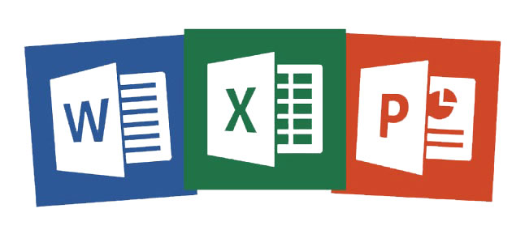
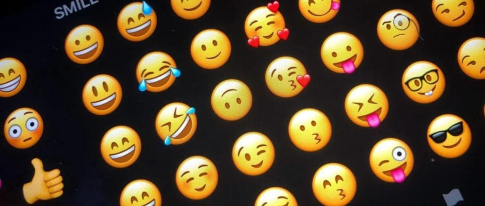

Bits; Bytes; Bússolas;
Seu guia para alfabetização digital
Ínicio
|
Módulos
|
Participe
|

MÓDULO 1 - Ferramentas Digitais para Trabalho

MÓDULO 2 - Linguagem na Internet
MÓDULO 3 - Criação de Contéudo pra Internet
MÓDULO 4 - Navegação Online